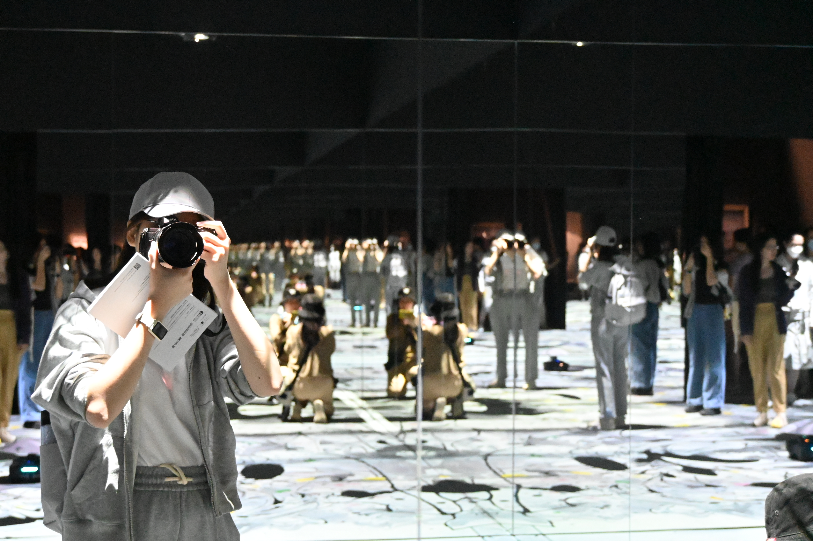
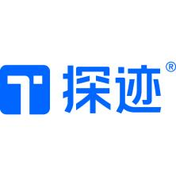
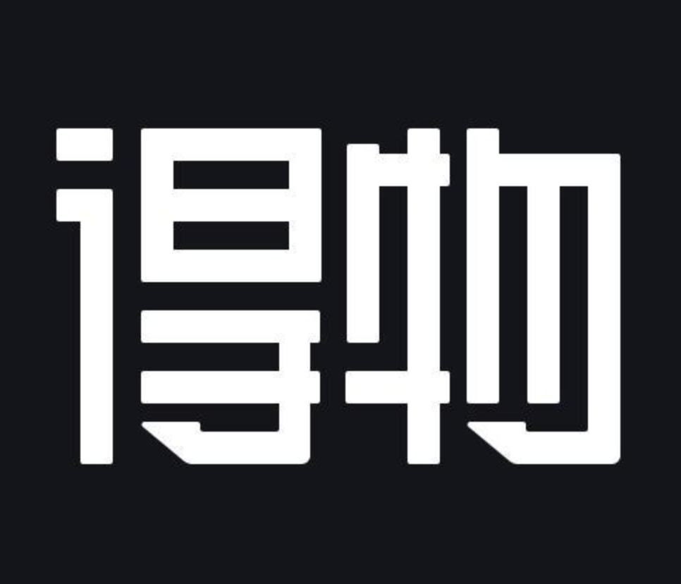

My Work Experiences
Beyond coursework and academic projects, I have also gained hands-on experience in communication, design, content operations, and collaboration across different types of organizations. These experiences helped me turn classroom training and personal interests into more concrete and professional practice.

Hong Kong Professional Airline Pilots Association HKPAPA
Communications and Design Intern
During my internship at HKPAPA, I designed promotional materials for pilot training programs and member seminars, while also handling bilingual translation of technical documents and association correspondence. I also supported data organization and coordination for educational initiatives, which strengthened my skills in information design, language precision, and professional collaboration.

Guangzhou Tungee Technology Co Ltd
Overseas Social Media Operations Intern
During my internship at Guangzhou Tungee Technology, I worked on overseas social media content creation, publishing, influencer collaboration, and strategy optimization for Futern, an AI sales product. This role gave me hands-on experience in AI product communication, global brand outreach, and international content operations, while deepening my understanding of the relationship between content expression and commercial communication.

Dewu
Category Operations Intern — Cross-border Footwear and Apparel
During my internship at Dewu, I supported cross-border footwear and apparel category operations through product selection, brand analysis, and merchant coordination. I helped follow up merchant onboarding and warehouse issues, supported inventory clearance and new merchant activation, and contributed to the Qixi promotional campaign. This experience strengthened my ability to connect data analysis with day-to-day operations, supply coordination, and e-commerce campaign execution.
Guangdong Radio and Television
Content Production and New Media Operations Intern
During my internship at Guangdong Radio and Television, I contributed to the production of the programs Heart Breathing and Greater Bay Area in 30 Minutes, including video shooting and editing, new media operations, copywriting, WeChat layout editing, news reporting, and audio editing. This experience gave me a more systematic understanding of professional media workflows and strengthened my execution skills in public-interest communication and journalism practice.